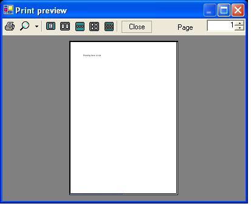

The following tutorial shows how to create and execute the script that allows users to print any text string to the default printer with print preview. This is an example of multiple scripts application.
| //css_import print; using System; using System.Text; using Scripting; class Script { static public void Main(string[] args) { if (args.Length != 0) { SimplePrinting printer = new SimplePrinting(); printer.Print(args[0], true); } } } |
The script will show the following dialog.

Now you start printing by pressing 'print' button.
You probably noticed special directive //css_import print; just before class declaration. This directive instructs the script engine to load at runtime another script ('print.cs'). This script is located in cs-script/Lib, however the same result would be achieved if it was in the same directory with PrintText.cs. Print.cs script contains implementation of SimplePrinting class which belongs to namespace Scripting (this is why "using Scripting;" was placed in the code). The usage of the class SimplePrinting is the same as if it was implemented in the main script file (PrintText.cs).
CS-Script tutorials | Importing scripts